14 Intro to ggplot2
Fundamentals of Data Visualization
Data visualization is an essential skill for anyone working with data. It is a combination of statistical understanding and design principles and is really about graphical data analysis and communication and perception.
Data visualization is often times glossed over in our stats courses. This is unfortunate because it is so important for better understanding our data, for communicating our results to others, and frankly it is too easy to create poorly designed visualizations.
As a scientist, there are two purposes for visualizing our data.
- Data exploration: it is difficult to fully understand our data just by looking at numbers on a screen arranged in rows and columns. Being skilled in data visualization will help you better understand your data.
- Explain and Communicate: You will also need to explain and communicate your results to colleagues or in scientific publications.
The same data visualization principles apply to both purposes, however for communicating your results you may want to place more emphasis on aesthetics and readability. For data exploration your visualizations do not have to be pretty.
Leland Wilkinson (Grammar of Graphics, 1999) formalized two main principles in his plotting framework:
Graphics = distinct layers of grammatical elements
Meaningful plots through aesthetic mappings
The essential grammatical elements to create any visualization are:
Plotting Functions in R
It is possible to create plots in R using the base R function plot(). The neat thing about plot() is that it is really good at knowing what kind of plot you want without you having to specify. However, these are not easy to customize and the output is a static image not an R object that can be modified.
To allow for data visualization that is more in line with the principles for a grammar of graphics, Hadley Wickham created the ggplot2 package. This by far the most popular package for data visualization in R.

Grammar of Graphics
We saw from the last chapter that the two main components in a grammar of graphics are:
Graphics = distinct layers of grammatical elements
Meaningful plots through aesthetic mappings
We also saw that the three essential elements are the data layer, aesthetics layer, and geometrics layer. In ggplot2 there are a total of 7 layers we can add to a plot
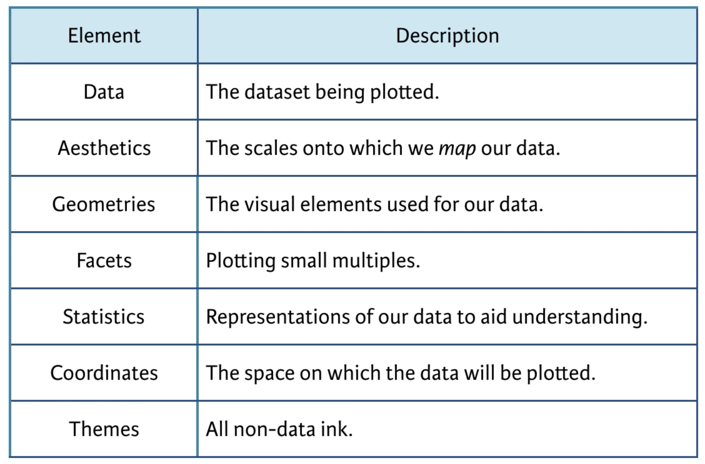
Data layer
The Data Layer specifies the data being plotted.

Let’s see what this means more concretely with an example data set. A very popular data set used for teaching data science is the iris data set. In this data set various species of iris were measured on their sepal and petal length and width.
This data set actually comes pre-loaded with R, so you can simply view it by typing in your console
View(iris)head(iris)
## Sepal.Length Sepal.Width Petal.Length Petal.Width Species
## 1 5.1 3.5 1.4 0.2 setosa
## 2 4.9 3.0 1.4 0.2 setosa
## 3 4.7 3.2 1.3 0.2 setosa
## 4 4.6 3.1 1.5 0.2 setosa
## 5 5.0 3.6 1.4 0.2 setosa
## 6 5.4 3.9 1.7 0.4 setosaWe can see that this data is in wide format. What type of graph we can visualize will depend on the format of the data set. On occasion, in order to visualize a certain pattern of the data will require you to change the formatting of the data.
Let’s go ahead and start building our graphical elements in ggplot2. Load the ggplot2 library. Then:
You can see that we only have a blank square. This is because we have not added any other layers yet, we have only specified the data layer.
Aesthetics Layer
The next grammatical element is the aesthetic layer, or aes for short. This layer specifies how we want to map our data onto the scales of the plot.
Note
Note that aesthetics refers to a mapping function. That is, how certain elements (e.g., color, shape, size, etc.) map onto variables in our data.
You can also set specific values for these elements (not mapped onto any variables in the data). These are not typically referred to as aesthetics in the grammar of graphics.
E.g., to make all points in a plot red: geom_point(color = “red”)

The aesthetic layer maps variables in our data onto scales in our graphical visualization, such as the x and y coordinates. In ggplot2 the aesthetic layer is specified using the aes() function. Let’s create a plot of the relationship between Sepal.Length and Sepal.Width, putting them on the x and y axis respectively.

You can see we went from a blank box to a graph with the variable and scales of Sepal.Length mapped onto the x-axis and Sepal.Width on the y-axis.
The aesthetic layer also maps variables in our data to other elements in our graphical visualization, such as color, size, fill, etc.
Geometries Layer
The next essential element for data visualization is the geometries layer or geom layer for short.

Just to demonstrate to you that ggplot2 is creating R graphic objects that you can modify and not just static images, let’s assign the previous graph with data and aesthetics layers only onto an R object called p, for plot.
Now let’s say we want to add the individual raw data points to create a scatterplot. To do this we can use the function geom_point(). This is a geom layer and the type of geom we want to add are points.
In ggplot2 there is a special notation that is similar to the pipe operator %>% seen before. Except it is plus sign +
p + geom_point()
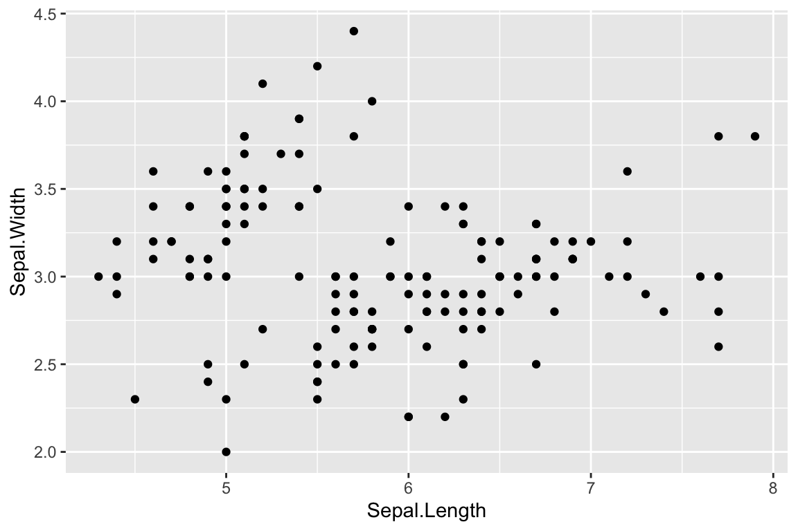
And walla! Now we have a scatterplot of the relationship between Sepal.Length and Sepal.Width. Cool.
If we look at the scatterplot it appears that there are at least two groups or clusters of points. These clusters might represent the different species of flowers, represented in the Species column. There are different ways we can visualize or separate this grouping structure.
First, let’s create an aesthetic to map the color of the points to the variable Species in our data.
ggplot(iris, aes(x = Sepal.Length, y = Sepal.Width, color = Species)) +
geom_point()
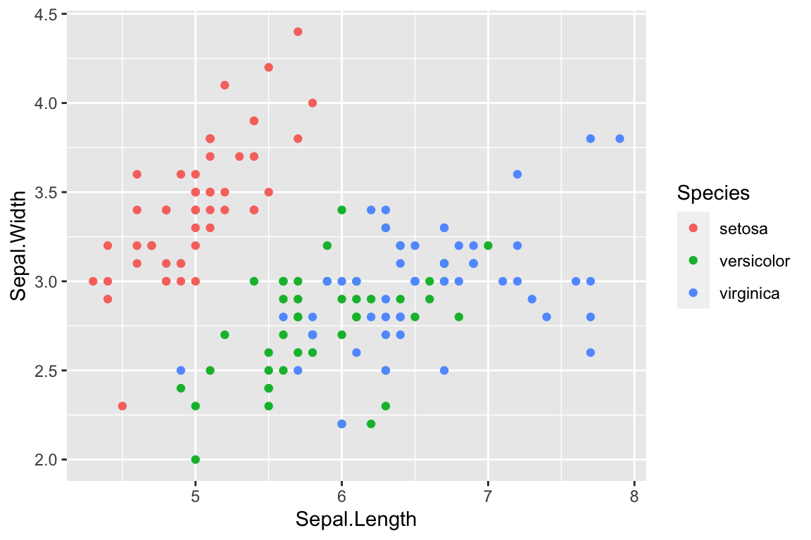
Next, we will consider how to plot Species in separate plots within the same visualization.
Facets Layer
The facet layer allows you to create subplots within the same graphic object
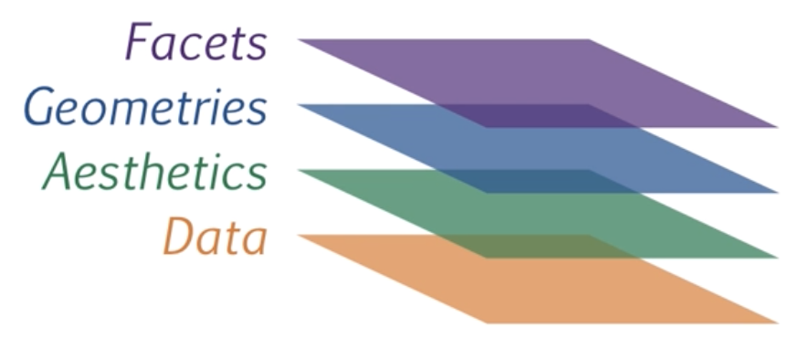
The previous three layers are the essential layers. The facet layer is not essential, however given your data you may find it helps you to explore or communicate your data.
Let’s create facets of our scatterplot by Species
ggplot(iris, aes(Sepal.Length, Sepal.Width)) +
geom_point() +
facet_grid(~ Species)
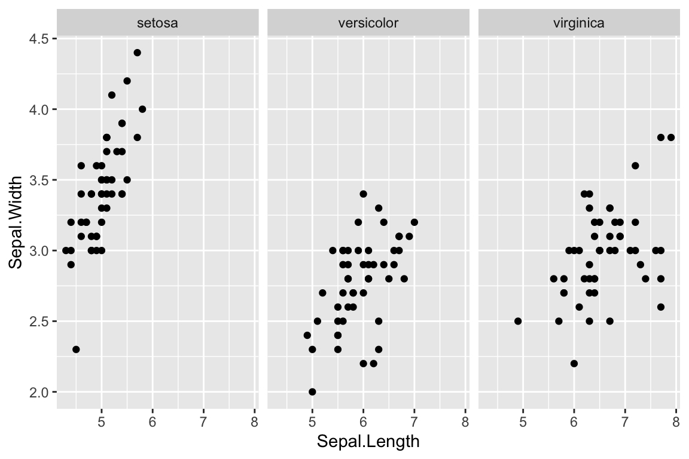
Statistics Layer
The statistics layer allows you plot statistical values calculated from the data

So far we have only plotted the raw data values. However, we may be interested in plotting some statistics or calculated values, such as a regression line, means, standard error bars, etc.
Let’s add a regression line to the scatterplot. First without the facet layer then with the facet layer
ggplot(iris, aes(Sepal.Length, Sepal.Width)) +
geom_point() +
stat_smooth(method = "lm", se = FALSE)
## `geom_smooth()` using formula = 'y ~ x'
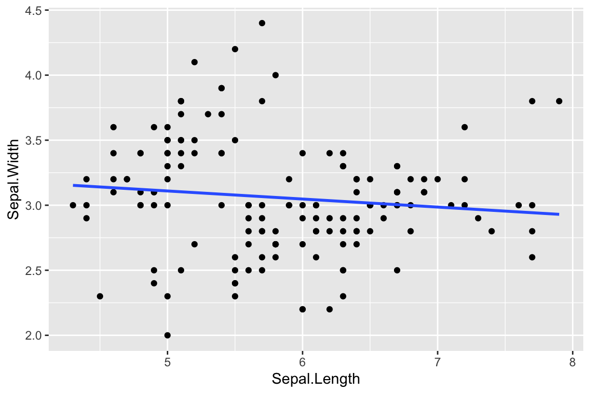
ggplot(iris, aes(Sepal.Length, Sepal.Width)) +
geom_point() +
facet_grid(~ Species) +
stat_smooth(method = "lm", se = FALSE)
## `geom_smooth()` using formula = 'y ~ x'
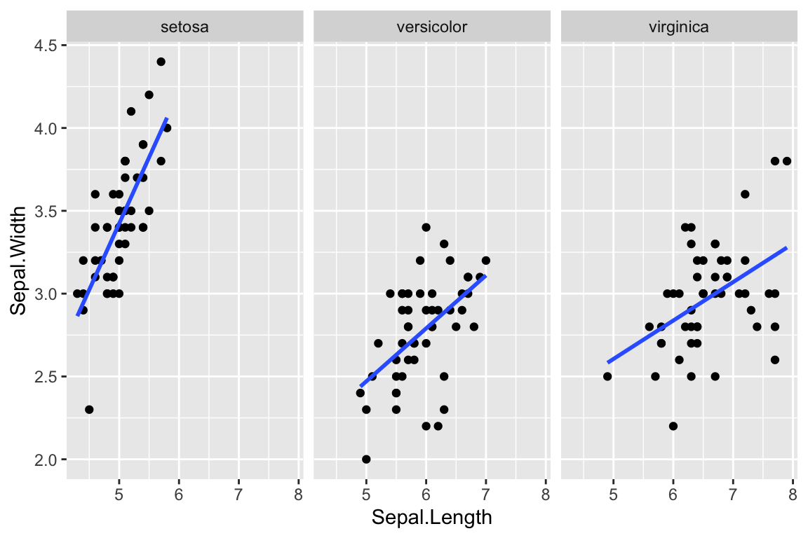
Coordinates Layer
The coordinate layer allows you to adjust the x and y coordinates

There are two main groups of functions that are useful for adjusting the x and y coordinates.
axis limits
You can adjust limits (min and max) of the x and y axes using the coord_cartesian(xlim = "", ylim = "") function.
If you want to compare two separate graphs, then they need to be on the same scale! This is actually a very important design principle in data visualization.
Compare these two sets of plots:
library(dplyr)
##
## Attaching package: 'dplyr'
## The following objects are masked from 'package:stats':
##
## filter, lag
## The following objects are masked from 'package:base':
##
## intersect, setdiff, setequal, union
library(patchwork)
p1 <- ggplot(filter(iris, Species == "setosa"),
aes(Sepal.Length, Sepal.Width)) +
geom_point() +
stat_smooth(method = "lm", se = FALSE)
p2 <- ggplot(filter(iris, Species == "versicolor"),
aes(Sepal.Length, Sepal.Width)) +
geom_point() +
stat_smooth(method = "lm", se = FALSE)
p3 <- ggplot(filter(iris, Species == "virginica"),
aes(Sepal.Length, Sepal.Width)) +
geom_point() +
stat_smooth(method = "lm", se = FALSE)
p1 + p2 + p3
## `geom_smooth()` using formula = 'y ~ x'
## `geom_smooth()` using formula = 'y ~ x'
## `geom_smooth()` using formula = 'y ~ x'
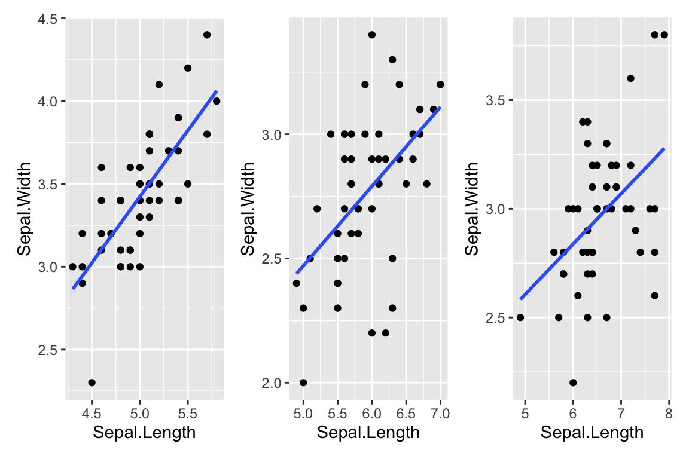
library(dplyr)
library(patchwork)
p1 <- ggplot(filter(iris, Species == "setosa"),
aes(Sepal.Length, Sepal.Width)) +
geom_point() +
stat_smooth(method = "lm", se = FALSE) +
coord_cartesian(xlim = c(4, 8), ylim = c(2, 5))
p2 <- ggplot(filter(iris, Species == "versicolor"),
aes(Sepal.Length, Sepal.Width)) +
geom_point() +
stat_smooth(method = "lm", se = FALSE) +
coord_cartesian(xlim = c(4, 8), ylim = c(2, 5))
p3 <- ggplot(filter(iris, Species == "virginica"),
aes(Sepal.Length, Sepal.Width)) +
geom_point() +
stat_smooth(method = "lm", se = FALSE) +
coord_cartesian(xlim = c(4, 8), ylim = c(2, 5))
p1 + p2 + p3
## `geom_smooth()` using formula = 'y ~ x'
## `geom_smooth()` using formula = 'y ~ x'
## `geom_smooth()` using formula = 'y ~ x'
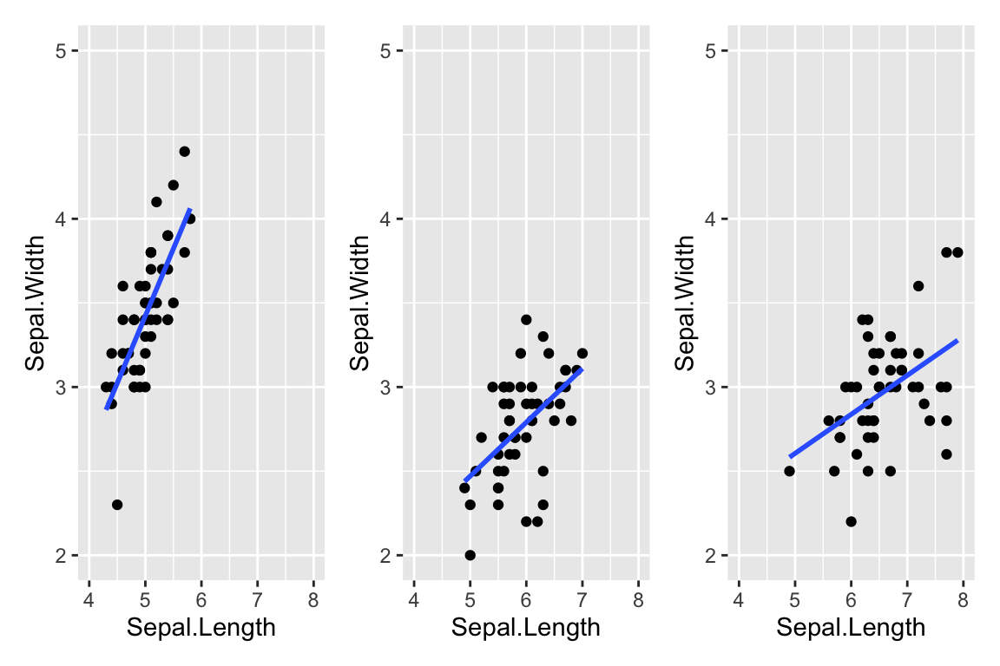
Note
The patchwork package was used to easily create plot of two separate plots side-by-side. The patchwork package is excellent for arranging and combining multiple plots into one figure in all sorts of configurations.
axis ticks and labels
You can adjust the scale (major and minor ticks) of the x and y axes using the scale_x_ and scale_y_ sets of functions. The two main sets of functions to know are for continuous and discrete scales:
continuous:
scale_x_continuous(breaks = seq())andscale_y_continuous(breaks = seq())discrete:
scale_x_discrete(breaks = c())andscale_y_continuous(breaks = c())
For example:
ggplot(filter(iris, Species == "setosa"),
aes(Sepal.Length, Sepal.Width)) +
geom_point() +
stat_smooth(method = "lm", se = FALSE) +
coord_cartesian(xlim = c(4, 8), ylim = c(2, 5)) +
scale_x_continuous(breaks = seq(4, 8, by = .5)) +
scale_y_continuous(breaks = seq(2, 5, by = .5))
## `geom_smooth()` using formula = 'y ~ x'
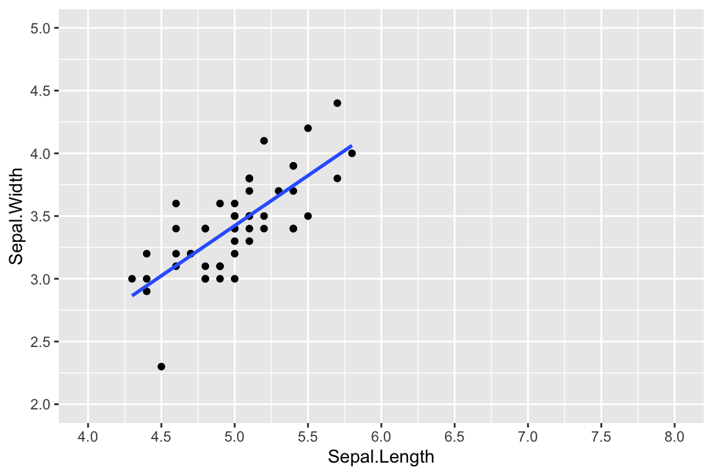
Warning
It is advisable to set the limits of breaks = to be the same as the xlim and ylim specified in coord_cartesian()
Themes Layer
The Themes Layer refers to any visual elements not mapped to data variables

You can change the labels of x or y axis, add a plot title, modify a legend title, add text anywhere on the plot, change the background color, axis lines, plot lines, etc.
There are three types of elements within the Themes Layer; text, line, and rectangle. Together these three elements can control all the non-data ink in the graph. Underneath these three elements are sub-elements and this can be represented in a hierarchy such as:

For instance, you can see that you can control the design of the text for the plot title and legend title theme(title = element_text()) or individually with theme(plot.title = element_text(), legend.title = element_text()).
Any text element can be modified with
element_text()Any line element can be modified with
element_line()Any rect element can be modified with
element_rect()
You can then control different features such as the color, linetype, size, font family, etc.

As an example let’s change some theme elements to our facet plot. Let’s change the axis value labels to red font and increase the size
ggplot(iris, aes(Sepal.Length, Sepal.Width)) +
geom_point() +
facet_wrap(~ Species) +
stat_smooth(method = "lm", se = FALSE) +
theme(axis.text = element_text(color = "red", size = 14))
## `geom_smooth()` using formula = 'y ~ x'
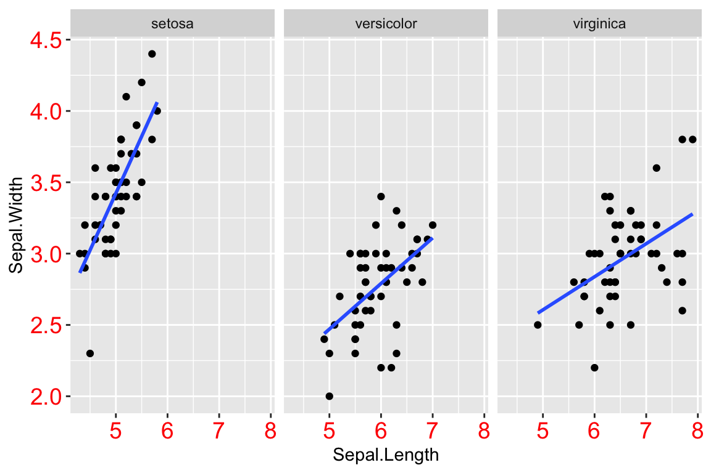
Now let’s only change the x-axis text and not the y-axis text.
ggplot(iris, aes(Sepal.Length, Sepal.Width)) +
geom_point() +
facet_wrap(~ Species) +
stat_smooth(method = "lm", se = FALSE) +
theme(axis.text.x = element_text(color = "red", size = 14))
## `geom_smooth()` using formula = 'y ~ x'
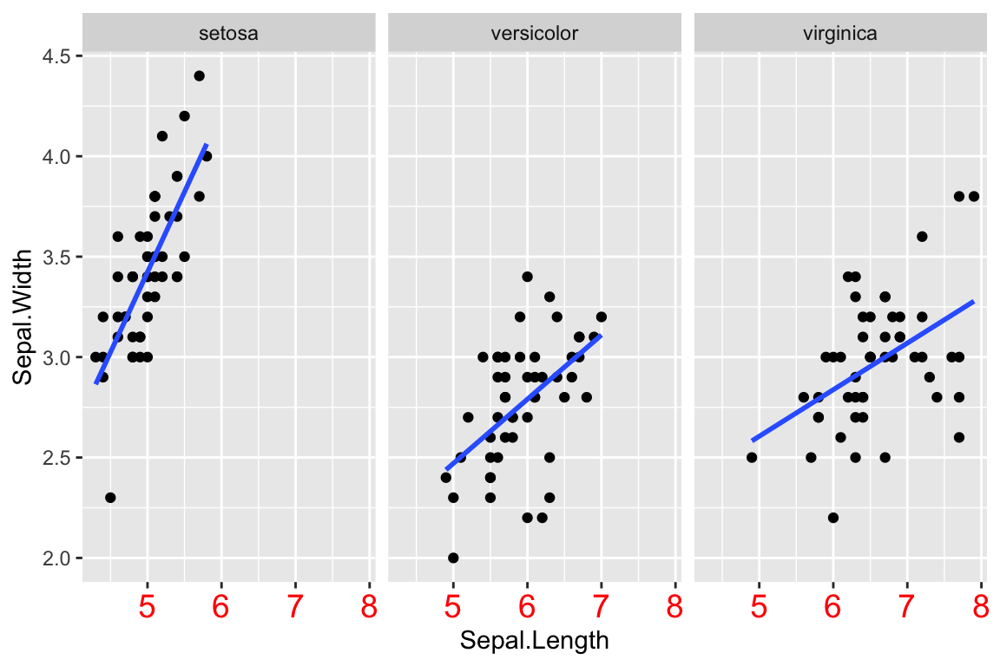
It is a good idea to have a consistent theme across all your graphs. And so you might want to just create a theme object that you can add to all your graphs.
a_theme <- theme(axis.text.x = element_text(color = "red", size = 14),
panel.grid = element_blank(),
panel.background = element_rect(fill = "pink"))
ggplot(iris, aes(Sepal.Length, Sepal.Width)) +
geom_point() +
facet_wrap(~ Species) +
stat_smooth(method = "lm", se = FALSE) +
theme(axis.text.x = element_text(color = "red", size = 14)) +
a_theme
## `geom_smooth()` using formula = 'y ~ x'
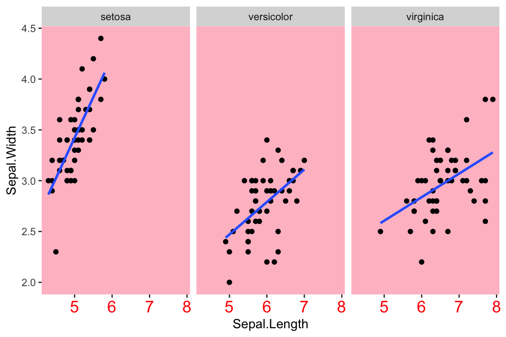
Built-in Themes
For the most part you can probably avoid the theme() function by using built-in themes, unless there is a specific element you want to modify.
ggplot(iris, aes(Sepal.Length, Sepal.Width)) +
geom_point() +
facet_wrap(~ Species) +
stat_smooth(method = "lm", se = FALSE) +
theme(axis.text.x = element_text(color = "red", size = 14)) +
theme_linedraw()
## `geom_smooth()` using formula = 'y ~ x'
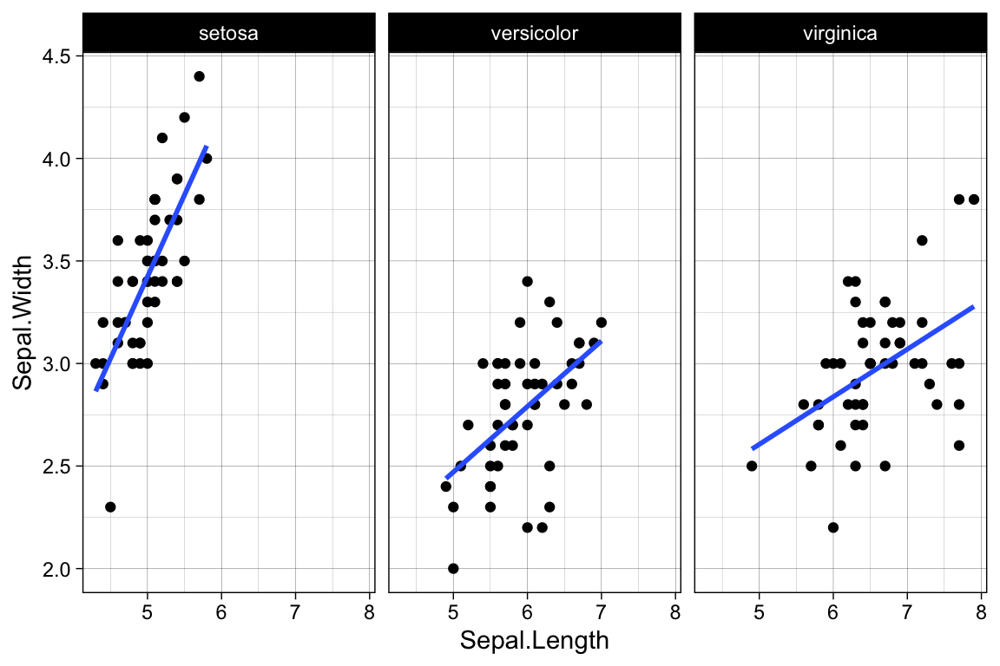
You can also set a default theme for the rest of your ggplots at the top of your script. That way you do not have to keep on specifying the theme for every ggplot.
Now you can create a ggplot with theme_linedraw() without specifying theme_linedraw() every single time.
ggplot(iris, aes(Sepal.Length, Sepal.Width)) +
geom_point() +
facet_wrap(~ Species) +
stat_smooth(method = "lm", se = FALSE)You can do a Google search to easily find different types of theme templates.